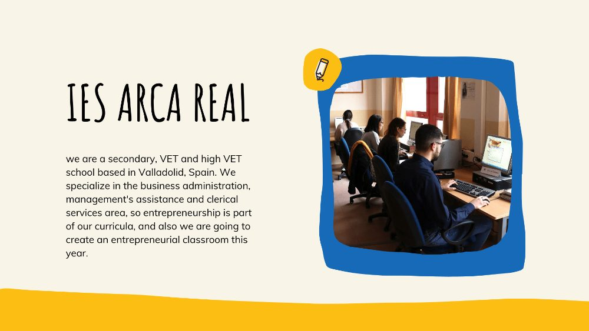
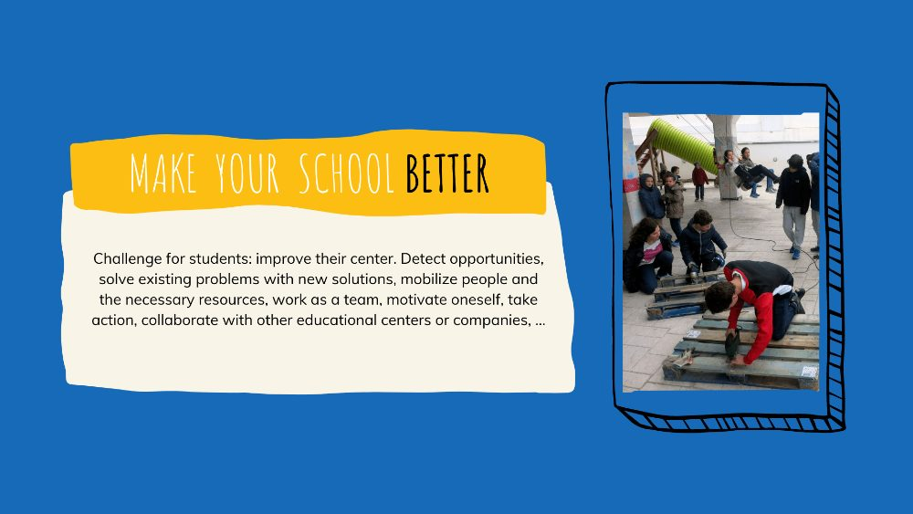
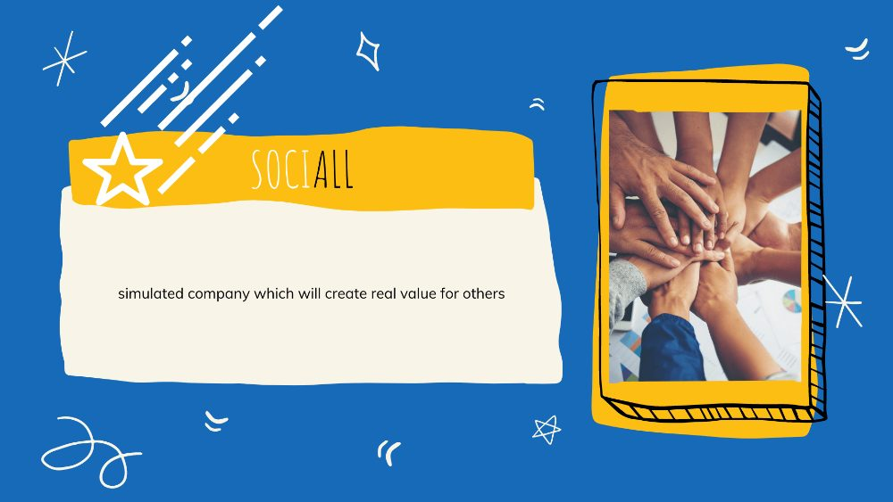

El 15 de septiembre de 2021, en el IES Arca Real nos invitaron a la reunión inicial de “Promoting Entrepreneurial Centres of Vocational Excellence”, una iniciativa dentro del proyecto ENE de la European Training Foundation (ETF). Su objetivo principal es apoyar la creación de una asociación en el área de los Centros de Excelencia Profesional en Emprendimiento (Entrepreneurial CoVEs) y la excelencia emprendedora como competencia clave.
Intenté explicar cómo trabajamos el emprendimiento en nuestro centro y cuáles son nuestros planes para los próximos años, ya que vamos a contar con un aula dedicada al emprendimiento. Aquí tenéis el enlace a la presentación en Canva, pero más abajo encontraréis casi todo lo que explicamos en la conferencia.

Somos un centro de Secundaria y FP en Valladolid, especializado en el área de administración de empresas, así que el emprendimiento forma parte de nuestro currículo: se espera, por ejemplo, que nuestro alumnado sepa cómo se crea una empresa y cómo elaborar un plan de negocio. Ahora, 50 centros de Castilla y León van a desarrollar las competencias emprendedoras de su alumnado según EntreComp, creando aulas de emprendimiento. Como seguimos la definición de emprendimiento de EntreComp, esperamos que nuestro alumnado sea emprendedor no solo en el sentido tradicional —montar una empresa o crear valor económico— sino en cualquier situación: desde el centro hasta innovar en su futuro puesto de trabajo, o simplemente como ciudadanía. Queremos que se den cuenta de que son motores de cambio y de que pueden crear valor y mejorar el mundo si mantienen una mentalidad emprendedora.
Voy a mostraros algunas experiencias emprendedoras pasadas, y otras que pretendemos llevar a cabo en nuestras nuevas aulas de emprendimiento. En el IES Arca Real hemos puesto en marcha una empresa simulada en el aula como herramienta pedagógica para formar a nuestro alumnado en la empresa de forma práctica (aprender haciendo). Conseguimos que gestionen su propia empresa, realizando tareas empresariales reales como comprar y vender sus productos virtuales por todo el mundo y conociendo los entresijos de gestionar un pequeño negocio. Al gestionar el día a día, el alumnado no solo aplica lo aprendido de forma teórica: desarrolla competencias y mentalidad emprendedora, e identifica salidas profesionales acordes con sus intereses y talentos. Podríais pensar que es fácil desarrollar competencias emprendedoras en una empresa simulada, pero no se trata de eso: no es el lugar, es la metodología. Se espera que el alumnado demuestre que sabe de marketing, finanzas, recursos humanos y atención al cliente, pero también que sea creativo, detecte oportunidades y problemas y proponga soluciones, trabaje con otras personas, consiga los recursos que necesita, movilice a otros, tome la iniciativa, afronte un entorno cambiante y aprenda de la experiencia. Y esas competencias se pueden entrenar en una empresa simulada, o en una panadería o un taller simulados.
Una forma de trabajar las competencias emprendedoras es situar al alumnado en el centro de la experiencia de aprendizaje, por ejemplo a través del aprendizaje basado en retos o en proyectos.
Un proyecto que podría reproducirse en cualquier lugar sería poner al alumnado a trabajar para mejorar su propio centro. Por ejemplo, en mi centro no tenemos bancos en el patio ni zonas verdes. Queremos retar al alumnado a ser creativo, encontrar soluciones y actuar: pueden investigar, construir los bancos ellos mismos, buscar los materiales necesarios o colaborar con otros centros especializados en madera para fabricarlos. Podrían movilizar al profesorado de ciencias naturales para crear muros verdes, o investigar qué se ha hecho en otros centros. También queremos que nuestro centro sea sostenible, pero el alumnado y el profesorado no tienen dónde dejar la bici: ¿y si construyen un aparcamiento de bicis, colaborando con otros centros o reutilizando materiales ya disponibles? No quiero ser pesada repitiendo las competencias, pero en todos estos proyectos el alumnado pondría en práctica la visión, la creatividad, la valoración de ideas, el autoconocimiento, la motivación, la movilización de recursos y de personas, el trabajo en equipo, la educación económica y financiera, el trabajo en entornos inciertos y la toma de acción.

Os he mostrado una de las empresas simuladas que tenemos, pero falta un elemento de la definición de EntreComp: “crear valor para otros”. Por eso quiero poner en marcha una nueva empresa simulada que cree valor para el alumnado, mejorando su formación, y para nuestro entorno más cercano. A diferencia de las otras empresas simuladas del centro, que crean productos ficticios, SociALL prestará un servicio real a nuestra comunidad. Vamos a ayudar con nuestros conocimientos de diseño digital, redes sociales y marketing: podemos crear campañas de comunicación para nuestro centro; ayudar a los pequeños negocios del barrio con sus productos de marketing como folletos, carteles y redes sociales; y diseñar currículums atractivos para personas desempleadas, alumnado o antiguos alumnos. Así el alumnado verá que es posible beneficiarse a sí mismo —ganando experiencia y formación reales— a la vez que crea valor para otras personas.

Por último, quiero compartir algunas herramientas que hemos creado para otros docentes que intentan desarrollar competencias emprendedoras en su alumnado.
Esta es una herramienta creada para que cualquiera que no sepa nada de EntreComp tenga toda la información básica y los recursos reunidos en un solo lugar. Está en español, pero no me importa traducirla si os resulta útil.
Y esta es una herramienta que enlaza a una hoja de cálculo de Google para cada una de las 15 competencias EntreComp, con todos los hilos, niveles de competencia y resultados de aprendizaje. Las hojas están diseñadas para usarse con CoRubrics, un complemento de Google Sheets que automatiza todo el proceso de evaluación. No dudéis en escribirme con cualquier duda. ¡Que tengáis un buen día!